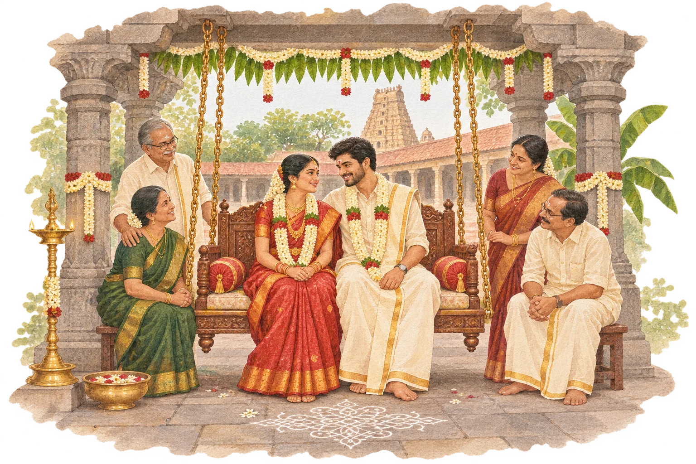
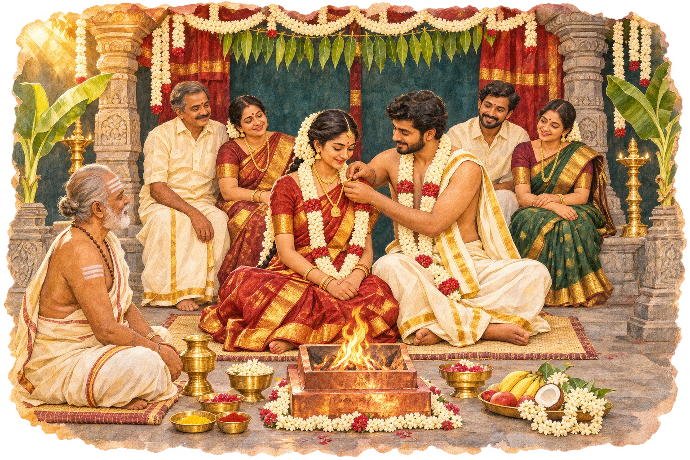
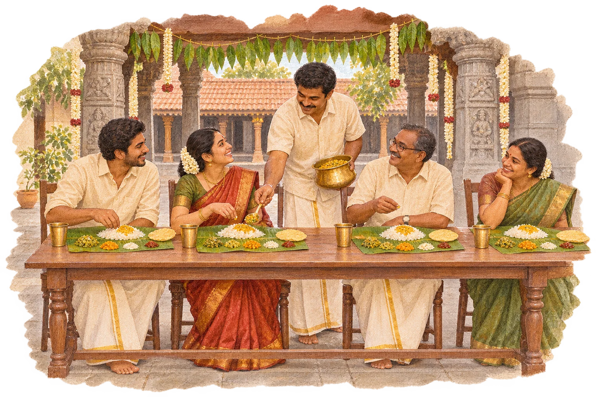

Fictional venue and illustrative schedule. The ceremony time is not a verified auspicious time.
01

A gentle sway. A thousand wishes.
6:00 AM IST · THE COURTYARD
Oonjal
Held by the love before us.
On the swing, we sit side by side. Around us, the voices that have made every place feel like home.
A place beside us +
Come a little early. Sit close to our elders. There is room in this circle for everyone who has loved us. Someone will move a little closer, just to make room.
The flowers are ready. So are our hearts.
02

In the presence of our loved ones. With a lifetime before us.
6:30 AM IST · THE MANDAPAM
Muhurtham
The moment we carry forever.
Jasmine in the morning air. A quiet breath before the promises. Your familiar faces, gathered close.
Sample time only, not a calculated muhurtham.
A small wish for a lifetime.
Choose a wish. Watch it become part of their story.
A keepsake in this preview, not a message sent.
A wish for our beginning +
May we keep choosing gentleness. May we make a home where laughter stays, and where there is always room for the people we love.
And then, as every family knows…
03

One more helping. One more story.
8:30 AM IST · THE DINING HALL
Virundhu
The wedding breakfast.
A banana leaf. A generous serving. Someone insisting you have more. The happiest kind of togetherness.
Stay a little longer +
There is no hurry in our favourite memories. Stay for the coffee, the family photographs, and the story that begins just as you’re about to leave.
“Coffee?” Our family’s way of saying: stay.
03 A LIGHT TO CARRY FORWARD
What we have been given, we hope to give.
The patience of our parents. The warmth of our homes. The kindness that found us along the way.